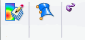

Customize the command ribbon
You can customize the command ribbon to help you perform your tasks more efficiently. For example, you can restore legacy Solid Edge commands that were retired or replaced by newer commands.
-
Display the Ribbon page of the Customize dialog box by doing either of the following:
-
Right-click a command on the ribbon and choose Customize the Ribbon.
-
Click the Customize arrow
 , and from the menu, choose Customize the Ribbon.
, and from the menu, choose Customize the Ribbon.
-
-
From the Environment to customize list, select the environment containing the command ribbon you want to customize.
Tip:The changes you make are set per environment, so you can use different settings in different environments. This also means that when you change documents between Draft and Part, for example, you must customize your settings in both places to keep the same options available.
-
Make any of the following types of changes:
-
Add commands to the command ribbon and remove commands from the ribbon, so that it contains the commands you frequently use.
-
Organize commands by changing the command order and adding separators to group them.
-
Organize tabs by changing the tab order.
-
Control the size of ribbon bar buttons and whether or not they display text.
-
On the Ribbon page, the left pane shows what is available based on your environment and selection in the Choose commands from list. The right pane shows the tabs and commands you see in Solid Edge.
Add commands to the command ribbon
-
In the Customize dialog box Choose commands from list, select the source category of the command you want to add to the ribbon:
-
All Tabs
-
All Commands
-
Commands Not in the Ribbon
-
Custom Tabs and Groups
-
Macros
-
System Menu
-
-
On the Ribbon page, in the left pane, expand the categories to locate and select the command you want to add.
-
Click Add.
The command is now displayed in the command structure shown in the right pane.
Remove commands from the command ribbon
-
On the Ribbon page, in the right pane, locate and select the command you want to remove from the ribbon.
-
Click Remove.
The command is now removed from the command structure shown in the right pane.
Organize the commands on the command ribbon
-
On the Ribbon page, in the right pane, select the command you want to move.
-
Do one of the following:
-
Click the Move Up button or Move Down button until the command is positioned where you want it.
-
Click the Separator button.
-
In the Customize dialog box, a dashed, horizontal line appears in the command list.
On the command ribbon, a vertical separator is displayed, like this:

-
Separators are inserted after the currently selected command.
-
You cannot insert a separator as the first or last item in the list, but you can move it using the Move Up and Move Down buttons.
-
You can delete a separator using the Remove button.
Organize the tabs on the command ribbon
-
On the Ribbon page, in the right pane, select the tab you want to move.
-
Click the Move Up button or Move Down button until the tab is positioned where you want it.
Control the size of ribbon bar buttons and whether or not they display text
-
On the Ribbon page, in the right pane, do either of the following:
-
To change the text size and icon size of all buttons on a ribbon tab or tab group, right-click the tab name, and choose Button Options from the shortcut menu.
In the Button Options dialog box, choose the options that best suit your preferences.
-
To customize a specific command button, right-click to display its shortcut menu, and then choose the appropriate check box options:
-
Small Button
-
Large Button
-
Text
-
No Text
-
-